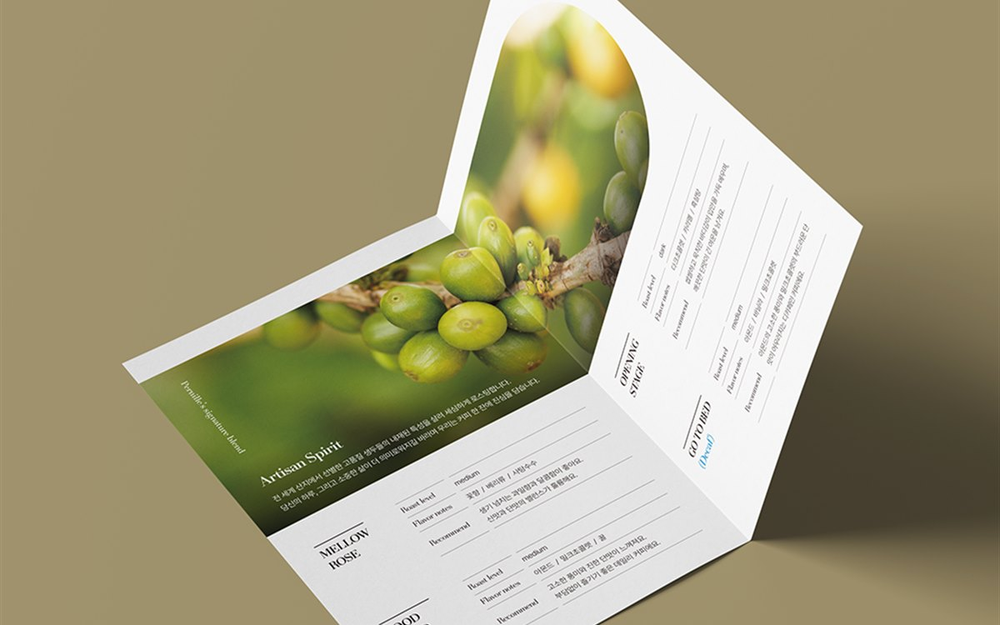

대전 카페·프랜차이즈 로고 디자인, 간판부터 메뉴판까지 통일하려면
- 2026.08.25
- 6분 분량
- 퍼스트디자인 대전지사

목차 ▾
■ 핵심 요약 ① 로고 시안을 고를 때는 화면이 아니라 간판 크기와 컵 홀더 크기, 두 극단에서 같이 확인해야 합니다. |
안녕하세요, 퍼스트디자인 대전지사입니다. 둔산동·도안신도시·궁동 대학가에는 개인 카페와 소규모 프랜차이즈 창업이 이어집니다. 로고는 온라인에서 저렴하게 만들고 간판은 간판 업체에, 메뉴판은 인쇄소에 따로 맡기다 보면 매장 안의 로고 색이 세 가지가 되는 일이 실제로 생깁니다. 오늘은 로고 하나가 간판·메뉴판·포장·SNS까지 같은 얼굴로 이어지게 만드는 순서를 정리해 드리겠습니다.
로고 시안은 무엇을 기준으로 골라야 할까?
로고 시안은 대부분 모니터에서 큰 크기로 봅니다. 그런데 실제 로고가 쓰이는 곳은 4m짜리 간판과 5cm짜리 컵 홀더입니다. 저희는 시안을 보여드릴 때 간판 합성 이미지와 컵 홀더·명함 합성 이미지를 함께 드립니다. 큰 크기에서 예쁜 로고가 작은 크기에서 뭉개지는 경우가 많고, 반대로 작게 잘 읽히는 로고는 크게 키워도 대부분 괜찮습니다.
또 하나의 기준은 '검정 한 가지로 찍어도 알아볼 수 있는가'입니다. 스탬프, 영수증, 포장 테이프처럼 단색으로만 쓰이는 자리가 반드시 생기기 때문에, 색을 뺀 흑백 버전에서도 형태가 살아 있는 시안을 고르셔야 합니다.

로고를 확정할 때 문서로 남겨야 할 세 가지는?
로고 파일만 받고 끝나면 이후 업체마다 다르게 해석합니다. 확정 시점에 아래 세 가지를 한 장짜리 규정으로 정리해 두면 간판 업체와 인쇄소가 같은 기준으로 작업합니다.
| 규정 | 내용 |
| 색상 | 인쇄용 CMYK, 화면용 RGB · HEX, 간판용 시트지 색 번호까지 같은 색으로 지정 |
| 최소 크기 | 이 크기 아래로는 심볼만 쓰거나 워드마크만 쓰도록 기준 지정 |
| 여백 | 로고 주변에 다른 요소를 두지 않는 최소 여백을 로고 높이 기준으로 지정 |
간판 업체에는 벡터 파일(AI 또는 PDF)과 시트지 색 번호를 넘겨야 합니다. JPG 로고를 넘기면 확대 시 테두리가 깨지고 색도 업체 임의로 맞춰집니다. 저희는 로고 확정 시 인쇄용·웹용·간판용 파일을 용도별 폴더로 나눠 드립니다.
메뉴판과 포장은 로고와 어떻게 맞출까?
메뉴판은 로고 색 하나와 회색, 서체 두 가지 안에서만 만들면 자연스럽게 통일됩니다. 색을 더 쓰고 싶을 때는 로고 색의 밝은 단계 하나만 추가합니다. 컵 홀더, 스티커, 쇼핑백 같은 포장은 로고 전체보다 심볼 하나 또는 워드마크 하나만 크게 쓰는 편이 세련되고 인쇄비도 줄어듭니다.
메뉴판·스티커·컵 홀더는 자체 인쇄소에서 소량부터 인쇄할 수 있어 개업 전 200~300개 단위로 시작하고, 메뉴가 안정되면 수량을 늘리는 방식을 권합니다.
가맹점 확장을 생각한다면 무엇을 준비해야 할까?
2호점부터는 점주가 각자 간판 업체를 구하기 시작합니다. 이때 로고 규정만 있으면 간판 형태와 매장 색이 매장마다 달라집니다. 가맹을 생각하는 브랜드는 로고와 함께 '매장 적용 가이드'를 만들어 두어야 합니다. 간판 규격별 시안, 외벽 색, 메뉴판 템플릿, 유니폼과 포장 규정을 10~20페이지로 정리해 두면 점주에게 그 파일 하나만 주면 됩니다.
가이드는 처음부터 완벽할 필요가 없습니다. 1호점을 운영하면서 실제로 만든 인쇄물과 간판을 기준으로 정리하면 되고, 저희는 1호점 제작물을 그대로 가이드로 묶어 드립니다.
자주 묻는 질문
Q. 궁동에 카페를 여는데 로고와 간판, 메뉴판을 한 번에 맡길 수 있나요?
A. 네. 로고 확정 후 간판 시안과 도면, 메뉴판·스티커·컵 홀더 인쇄까지 한 팀이 진행합니다. 간판 제작은 시공 업체와 연계하고, 디자인 파일과 색 번호는 저희가 넘깁니다.
Q. 로고 제작 기간과 비용은 어느 정도인가요?
A. 시안 2~3안 제안까지 1주, 수정·확정 1주, 적용물 제작 1주로 약 3주입니다. 비용은 로고 단독과 창업 패키지(로고·명함·메뉴판·간판 시안)로 나눠 안내드립니다.
Q. 이미 로고가 있는데 간판과 메뉴판만 맞춰 줄 수 있나요?
A. 네. 기존 로고를 기준으로 색·여백 규정을 정리하고 간판과 메뉴판을 그 규정에 맞춰 제작합니다. 로고 파일이 JPG뿐이면 벡터로 다시 그려 드립니다.
Q. 상표 등록도 도와주시나요?
A. 시안 단계에서 유사 상표를 먼저 검색해 등록 가능성이 낮은 방향은 피합니다. 출원은 변리사 사무소에서 진행하시고, 필요한 로고 파일은 저희가 정리해 드립니다.
| 12년+ 편집 디자인 경력 | 3200+ 납품한 프로젝트 | 98% 재의뢰 · 소개 비율 | 400+ 정부지원사업 · 바우처 수행 |
퍼스트디자인 대전지사는 대덕연구단지와 정부대전청사, 세종·청주·공주 충청권의 연구기관·바이오 기업·공공기관·제조기업 홍보물을 전담합니다. 기획·디자인·번역·촬영·인쇄를 한 팀에서 처리하고, 자체 인쇄소에서 소량 디지털 인쇄부터 대량 옵셋 인쇄까지 직접 진행합니다. 초안을 먼저 확인받고 진행하는 방식으로 12년간 3,200건 이상을 납품했습니다.
둔산동·도안·궁동·은행동 카페와 매장, 프랜차이즈 본사의 로고 디자인, 간판 시안, 메뉴판·포장 인쇄가 필요하시면 개업 일정과 함께 문의해 주세요. 로고부터 매장 적용까지 한 팀이 진행합니다. 상담은 1600-9487(평일 09:00~18:00) 또는 work@firstmkt.co.kr로 문의해 주세요. 대전·세종·충청권은 직접 방문 미팅도 가능합니다.
FIRST DESIGN DAEJEON
제작을 검토 중이신가요?
제작물 종류와 수량만 알려주시면 당일 견적과 일정을 안내드립니다. 기획부터 디자인·인쇄·납품까지 한 팀이 진행합니다.
제작 전에 자주 받는 질문
퍼스트디자인 대전지사가 상담 자리에서 실제로 많이 듣는 질문을 정리했습니다.
원고가 아직 정리되지 않았는데 상담이 가능한가요?
네. 목적과 독자만 정해져 있으면 됩니다. 연구성과집이든 제품 카탈로그든 원고 구조화부터 함께 시작하고, 표와 도식은 디자인 단계에서 다시 그립니다. 대전·세종·충청권은 방문 미팅에서 원고를 펼쳐 놓고 목차부터 잡아 드립니다.
초안은 언제 볼 수 있나요?
전체 디자인에 들어가기 전에 앞부분 몇 페이지를 먼저 디자인해 초안으로 보여드립니다. 초안 방향이 확정된 뒤 전체 작업을 진행하기 때문에 완성 단계에서 처음부터 다시 만드는 일이 없습니다.
인쇄까지 맡기면 무엇이 달라지나요?
자체 인쇄소에서 색 교정과 감리를 같은 팀이 진행하기 때문에 화면과 인쇄물의 색 차이를 끝까지 관리할 수 있습니다. 용지·코팅·제본 실물 샘플을 보고 사양을 정할 수 있고, 납품 일정도 한 곳에서 책임집니다.
FIRST DESIGN DAEJEON
상담 설문지 작성하고디자인 전문가에게 무료 상담 받기